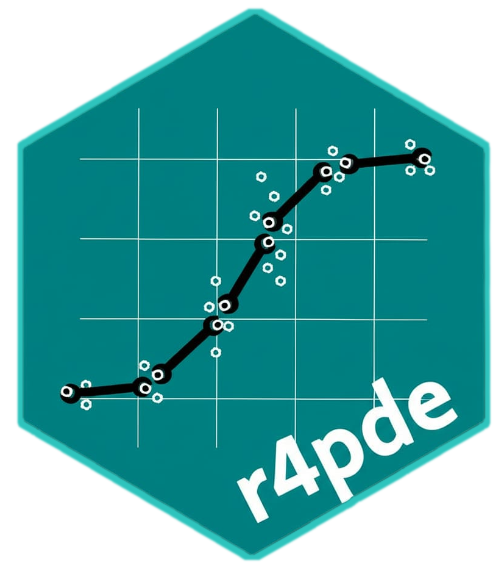
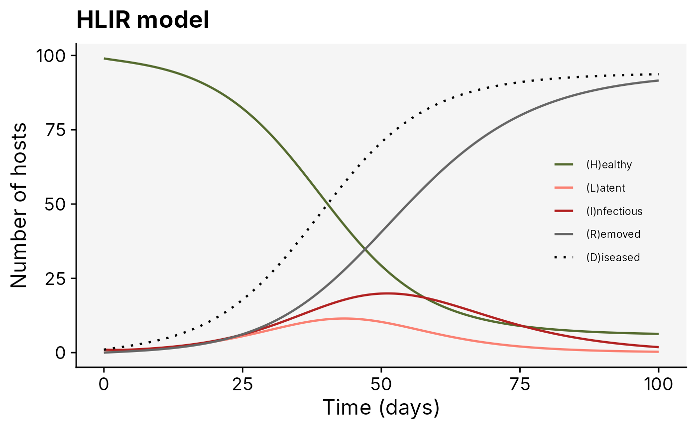
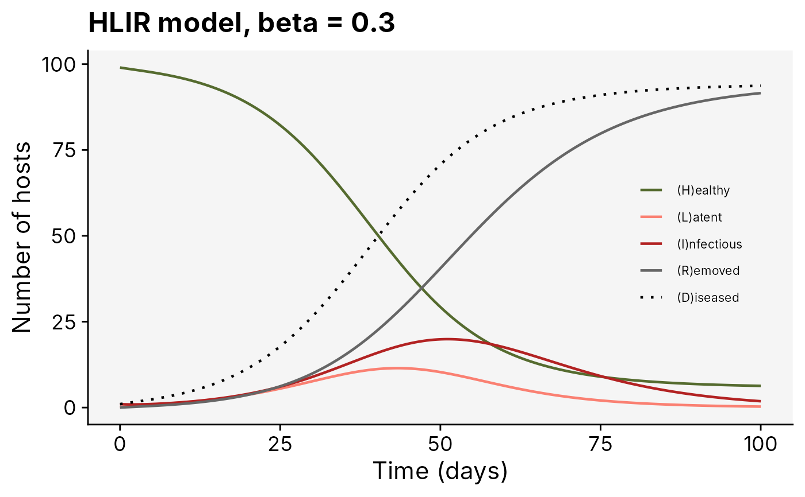
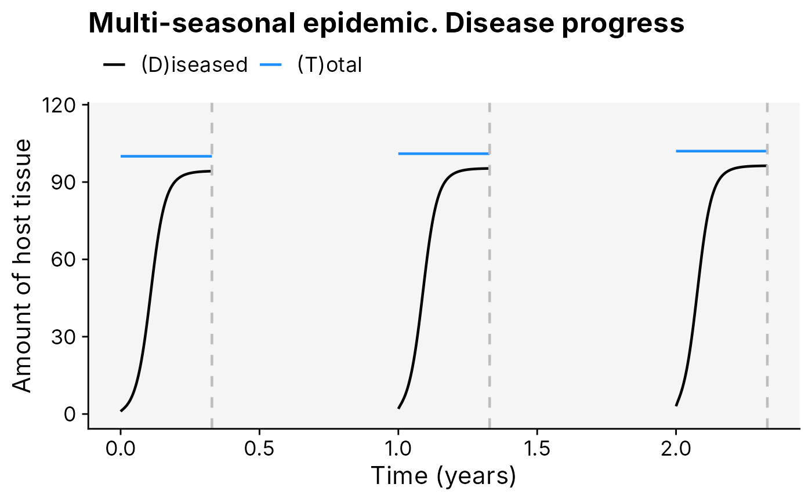
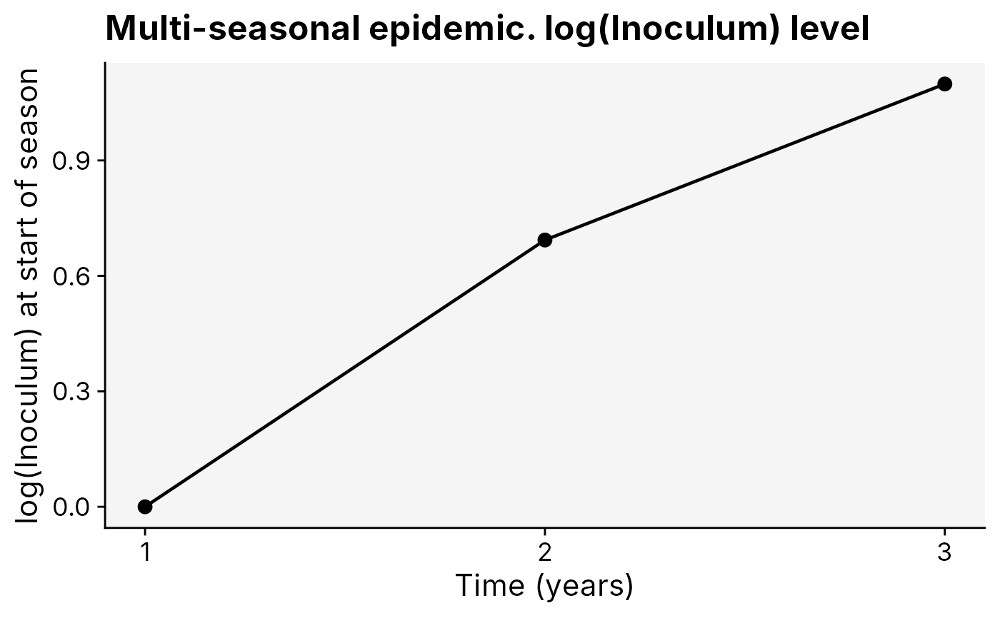

Plot the output of temporal compartmental epidemic models
Source:R/plot_model_results.R
plot_model_results.RdHelper used in the chapters on temporal compartmental models of the book R for Plant Disease Epidemiology (R4PDE). It draws the dynamics of the host compartments simulated by HLIR-type models, and the disease progress and inoculum level across seasons of a multi-seasonal epidemic.
Usage
plot_model_results(
data,
type = c("HLIR", "HLIRP", "HLIRP (with host growth)", "MULTI"),
print = TRUE
)Arguments
- data
For
type = "HLIR","HLIRP"or"HLIRP (with host growth)", a data frame with one row per time step and the numeric columnstime,H(healthy),L(latent),I(infectious) andR(removed), such as the output ofdeSolve::ode()converted withas.data.frame(). Other columns (for exampleP, the primary inoculum) are ignored.For
type = "MULTI", a list with the elements:n.yr: number of seasons;results: a list ofn.yrdata frames, one per season, each with the columnstime(days since the start of the season),H,L,IandR;inoc: numeric vector of lengthn.yrwith the inoculum at the start of each season;n.max: maximum amount of host tissue, used to set the upper limit of the y axis (1.15 * n.max).
- type
Model type, one of
"HLIR","HLIRP","HLIRP (with host growth)"or"MULTI".Logical. If
TRUE(default) the plot(s) are printed, as in the book. Set toFALSEto only return them, for example to modify them with further ggplot2 layers.
Value
Invisibly, a ggplot object for the HLIR-type models, or a list
with two ggplot objects, progress (diseased and total tissue) and
inoculum (log inoculum per season), for type = "MULTI".
Details
For the HLIR-type models, diseased tissue is computed as D = L + I + R
and drawn as a dotted line together with the four compartments. With
type = "HLIRP (with host growth)" the total amount of host tissue,
T = H + L + I + R, is added as a dotted blue line and the y axis is
labelled as an amount of host tissue instead of a number of hosts.
For type = "MULTI", the seasons are placed one after the other on a time
axis in years (((season - 1) * 365 + time) / 365), with dashed vertical
lines at the end of each season. A second plot shows log(inoc) at the
start of each season.
See also
Other Disease modeling:
get_brdwgd(),
get_era5(),
get_nasapower(),
windowpane()
Examples
# A simple HLIR model integrated with Euler steps
# (the book uses deSolve::ode())
hlir <- function(beta = 0.3, p = 5, i = 10, H0 = 99, I0 = 1,
days = 100, dt = 0.1) {
n <- days / dt + 1
out <- data.frame(time = seq(0, days, by = dt), H = H0, L = 0, I = I0, R = 0)
for (k in 2:n) {
s <- out[k - 1, ]
inf <- beta * s$H * s$I / (s$H + s$L + s$I + s$R)
out$H[k] <- s$H - dt * inf
out$L[k] <- s$L + dt * (inf - s$L / p)
out$I[k] <- s$I + dt * (s$L / p - s$I / i)
out$R[k] <- s$R + dt * s$I / i
}
out
}
res <- hlir()
plot_model_results(res, type = "HLIR")

# Return the plot without printing, then modify it
p <- plot_model_results(res, type = "HLIR", print = FALSE)
p + ggplot2::labs(title = "HLIR model, beta = 0.3")

# Multi-seasonal epidemic: three seasons with increasing inoculum
multi <- list(
n.yr = 3,
results = lapply(1:3, function(k) hlir(I0 = k, days = 120, dt = 0.5)),
inoc = c(1, 2, 3),
n.max = 100
)
plot_model_results(multi, type = "MULTI")

